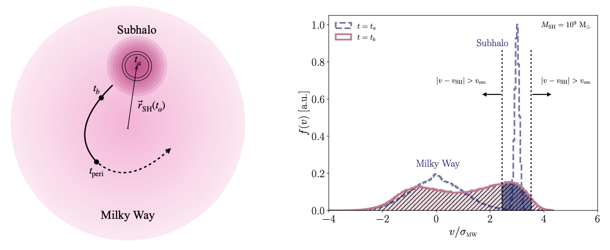
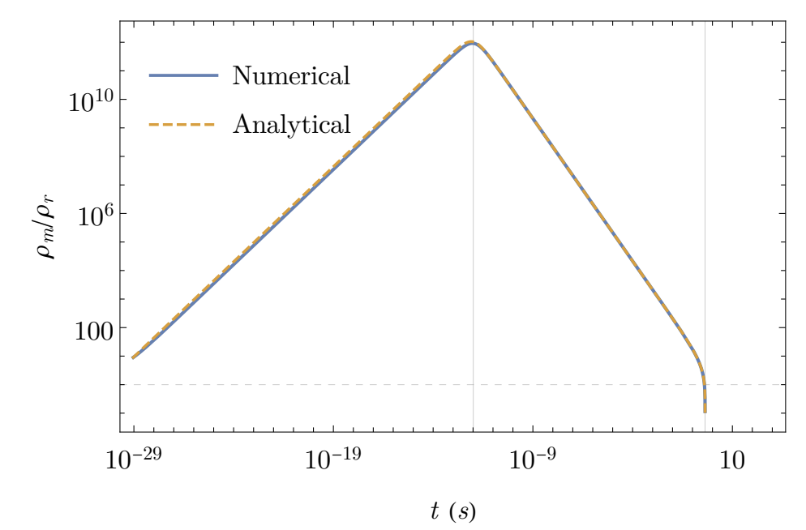

About
I am an incoming PhD student in the Department of Astronomy and Astrophysics at the University of Chicago. My research interests lie at the intersection of cosmology and particle physics, where I study dark matter and explore how astrophysical observations can reveal the fundamental physics underlying the dark sector.
We know from a wide range of observations that roughly 85 percent of the matter in our Universe is invisible to us. The standard paradigm of Cold Dark Matter (CDM), nonrelativistic, collisionless matter that interacts primarily through gravity, has been remarkably successful in explaining the formation and evolution of structure on cosmological scales. However, discrepancies between CDM predictions and observations on smaller, galactic scales motivate us to consider the possibility that dark matter has a richer particle nature.
My research explores this possibility by investigating how the microscopic properties and interactions of dark matter can manifest themselves in astrophysical systems. In particular, I am interested in developing new astrophysical probes of dark matter and physics beyond the Standard Model, spanning scales from individual galaxies to the early Universe.
Before joining the University of Chicago, I completed my A.B. in Physics at Princeton University. You can learn more about my research or take a look at my CV.
For a full publication list please see my inspireHEP or ORCID.
Recent Research

Below are some of my recent research projects.
Plasma-Like Dark Matter

One proposed solution to the galactic-scale tensions faced by cold dark matter (CDM) is to allow dark matter to interact through forces beyond those of the Standard Model. This framework, known as self-interacting dark matter (SIDM), introduces dark matter self-interactions that can modify its distribution and dynamics on galactic scales.
In the majority of SIDM models considered in the literature, dark matter dynamics are governed by particle collisions. However, nature provides many examples of systems in which collective effects, rather than binary collisions, play a dominant role. For instance, the dynamics of plasmas in the visible sector are governed by long-range electromagnetic interactions and collective fields. This raises an intriguing question: what if dark matter could likewise exhibit collective behavior?
My collaborators and I have recently begun exploring this possibility. In (DOI), we demonstrated that collective effects in dark matter can alter early universe structure formation even for very small coupling strengths much smaller than those characteristic of Standard Model electromagnetism. In (arXiv:2607.27312), my collaborators and I investigated the impact of dark-sector plasma instabilities on subhalos orbiting within the Milky Way. We found that these instabilities can drive the evaporation of low-mass subhalos, potentially reshaping the abundance and distribution of substructure throughout the Galaxy.

The Effects of Hawking Evaporation on Primordial Black Holes in Classical Systems

How does Hawking evaporation modify the dynamics of primordial black holes (PBHs) in classical gravitational systems? My collaborators and I studied this question in two settings (DOI). First, we investigated binary PBH systems, where gravitational-wave emission drives the binary inward while Hawking evaporation causes the black holes to lose mass and can drive the system outward. We characterized the energy emitted as gravitational waves and gravitons for binary PBH systems that inspiraled, outspiraled, or exhibited non-monotonic behavior. We also considered a hypothetical Universe dominated by a gas of PBHs, incorporating Hawking evaporation into the Friedmann equations to study how black-hole mass loss alters the expansion history and the transition between matter- and radiation-dominated epochs. We found that the main features of the evolution of this hypothetical Universe were largely independent of the initial conditions.
CV
Download my CV here: Download CV (PDF)
Where To Find Me
Feel free to reach out via email or find me on the platforms below.